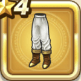

導かれし勇者の服下
攻略班 5.5点 / メラ属性耐性+3%ギガデーモンへの耐性+2%眠り耐性+3%
くわしい特徴
【レベル別習得スキル】 Lv1メラ属性耐性+3% Lv4ギガデーモンへの耐性+2% Lv6眠り耐性+3% Lv8守備力+4 Lv10さいだいHP+3 Lv16守備力+5 Lv20守備力+4 【限界突破スキル】 1凸眠り耐性+3% 2凸守備力+3 3凸きようさ+3 4凸さいだいHP+3

攻略班 5.5点 / メラ属性耐性+3%ギガデーモンへの耐性+2%眠り耐性+3%
【レベル別習得スキル】 Lv1メラ属性耐性+3% Lv4ギガデーモンへの耐性+2% Lv6眠り耐性+3% Lv8守備力+4 Lv10さいだいHP+3 Lv16守備力+5 Lv20守備力+4 【限界突破スキル】 1凸眠り耐性+3% 2凸守備力+3 3凸きようさ+3 4凸さいだいHP+3